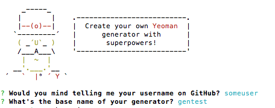

Использование yeoman генераторов в быту
По старой, доброй привычке для переварки свежеиспечённой информации пишу небольшую заметку в блог. На этот раз героем номера стал Yeoman, это такой джентельмен в шапке и одновременно способ создавать первоначальную структуру проекта. Причём не важно какого, php там или js. Я думаю при должном рвении можно и для python проектов создать такую.
Принцип работы прост, для начала генератор спросит вас несколько вопросов касающихся проекта. Потом на основании ответов создаст необходимые файлы и при помощи composer, npm или bower подтянет зависимости. Уже создано огромное количество генераторов,практически под любые задачи, но часто так бывает что структура предложенная автором генератора, не подходит. Вот и у меня так получилось.
Мой генератор пока выглядит крайне простым, и может быть даже “тупым”. Но свою задачу (мою задачу) выполняет.
Как создать свой генератор
А очень просто. Начать надо с глобальной установки yo и генератора генераторов (ага, смешно). Есть договорённости называть гененраторы с префиксом generator-
1 | npm install -g yo generator-generator |
В ответ генератор генераторов спросит вас о пользователе на гитхаб и имени для нового генератора.

После создания шаблона для вашего генератора, посмотрите в первую очередь файл index.js в папке generators/app/ именно в нём предстоит описать логику работы.
Файл экспортирует три объекта:
1 | module.exports = yeoman.generators.Base.extend({ prompting: function () {}, writing: {}, install : function(){} }) |
Первый отвечает за получение информации от пользователя, второй за создание структуру (копирование файлов, создание папок), третий за установку зависимостей.
Процесс получения информации от пользователя описан в массиве prompts,который состоит из объектов (вопрос), наиболее важные свойства каждого объекта-вопроса :
- type - возможные типы вопросов list, rawlist, expand, checkbox, confirm, input и password
- name - идентификатор вопроса
- default - начальное значение
Пример вопроса:
1 | type : 'list', name : 'csspreproccess', message : "Which css preprocessor you wish to use?", choices : [ { name : 'Stylus', value : 'stylus' }, { name : 'LESS', value : 'less' }], default : 0 |
В действительности для моего генератора здесь история практически заканчивается, как и говорил, он довольно прост. В будущем я его обязательно доработаю.
- Код генератора - https://github.com/Rukomoynikov/generator-ruq
- Установка и использование - nom install -g yo generator-ruq && yo ruq
Статьи по теме
http://frontender.info/generator-yeoman/ - статья на Frontender Magazine
http://code.tutsplus.com/tutorials/build-your-own-yeoman-generator--cms-20040 - статья с Tutsplus
http://www.eguneys.com/blog/2014/09/17/lets-build-a-yeoman-generator-2 - статья, весь код на coffeescript